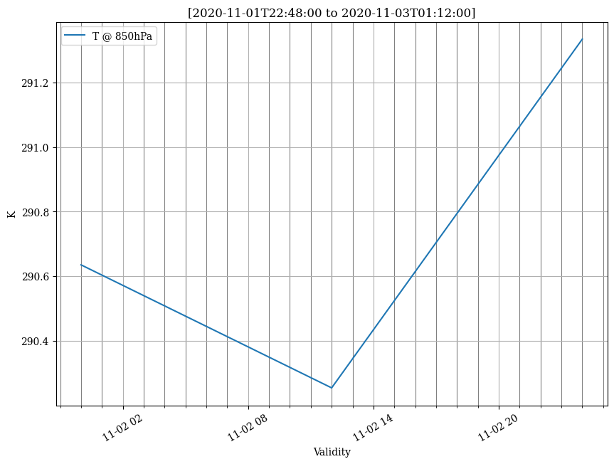

Plot a Point evolution in time¶
[1]:
%matplotlib inline
# for figures in notebook
# import & initialize epygram
import epygram
epygram.init_env()
# path to file
import os
INPUTS_DIR = os.path.join('..', 'inputs')
[2]:
paths = [os.path.join(INPUTS_DIR, 'grid.arome-forecast.guyane0025+00{:02}:00.grib'.format(i))
for i in (0, 12, 24)]
r = epygram.resources.meta_resource(paths, 'r', 'MV')
[3]:
f = r.readfield({'shortName':'t', 'typeOfFirstFixedSurface':100, 'level':850}) # temperature on pressure levels
p = f.extract_point(-55,5) # extract a Point
[4]:
print(type(p))
print(p.getdata(d4=True).shape)
<class 'epygram.fields.PointField.PointField'>
(3, 1, 1, 1)
[5]:
fig, ax = p.plotfield(plot_kwargs={'label':'T @ 850hPa'}, figsize=(10,7), unit='K')

[ ]: